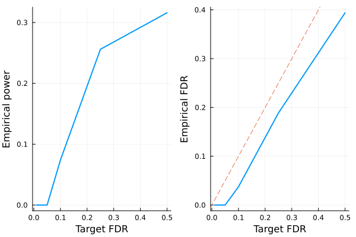

Model-X knockoffs
This tutorial is for generating model-X (Gaussian) knockoffs, which handles cases where covariates outnumber sample size ($p > n$). The methodology is described in the following paper
Candes E, Fan Y, Janson L, Lv J. Panning for gold:‘model‐X’knockoffs for high dimensional controlled variable selection. Journal of the Royal Statistical Society: Series B (Statistical Methodology). 2018 Jun;80(3):551-77.
# load packages needed for this tutorial
using Knockoffs
using Random
using GLMNet
using Distributions
using LinearAlgebra
using ToeplitzMatrices
using StatsKit
using Plots
gr(fmt=:png);Gaussian model-X knockoffs with known mean and covariance
To illustrate, lets simulate data $\mathbf{X}$ with covariance $\Sigma$ and mean $\mu$. Our model is
\[\begin{aligned} X_{p \times 1} \sim N(\mathbf{0}_p, \Sigma) \end{aligned}\]
where
\[\begin{aligned} \Sigma = \begin{pmatrix} 1 & \rho & \rho^2 & ... & \rho^p\\ \rho & 1 & & ... & \rho^{p-1}\\ \vdots & & & 1 & \vdots \\ \rho^p & \cdots & & & 1 \end{pmatrix} \end{aligned}\]
Given $n$ iid samples from the above distribution, we will generate knockoffs according to
\[\begin{aligned} (X, \tilde{X}) \sim N \left(0, \ \begin{pmatrix} \Sigma & \Sigma - diag(s)\\ \Sigma - diag(s) & \Sigma \end{pmatrix} \right) \end{aligned}\]
where $s$ is solved so that $0 \le s_j \le \Sigma_{jj}$ for all $j$ and $2Σ - diag(s)$ is PSD.
Random.seed!(2022)
n = 500 # sample size
p = 1000 # number of covariates
ρ = 0.4
Σ = Matrix(SymmetricToeplitz(ρ.^(0:(p-1)))) # true covariance matrix
μ = zeros(p) # true mean parameters
L = cholesky(Σ).L
X = randn(n, p) * L # var(X) = L var(N(0, 1)) L' = var(Σ)500×1000 Matrix{Float64}:
-0.255643 0.12145 1.90832 … -0.425334 -0.0875185 -1.26044
1.21857 -1.04975 -1.93608 0.986266 0.495375 0.526645
-0.489054 -0.325137 -0.389752 -0.54062 -0.765207 -0.925541
1.13077 0.715132 0.115053 -0.866809 0.835603 1.41018
-2.06667 -0.799976 0.104784 -1.10473 -1.53618 -1.48403
-0.692878 -1.04012 -0.711309 … 0.117786 0.419314 1.05
0.605767 -0.220341 -0.62107 1.36572 -0.454627 -0.226038
-0.156307 0.0225261 -0.117329 1.06143 1.35028 1.0699
0.443743 2.41354 0.635028 0.744278 0.229644 -0.640157
0.710929 0.0527427 1.35858 1.06147 -0.142669 -1.67164
0.785485 1.72134 -1.02638 … -0.222289 -0.903092 -0.237564
-0.0330742 1.02192 0.367135 -0.412167 0.127533 -0.0828143
-2.01006 -0.858529 -0.817414 1.52695 1.67114 2.15544
⋮ ⋱
-0.324703 0.476295 0.106425 -1.06599 -1.88418 -1.02433
-0.811388 0.00190805 -1.16822 0.780591 1.11014 -0.208461
-0.184579 0.344966 -0.648001 … 1.21303 -0.403468 -2.11791
1.27172 2.03987 1.4584 -0.819745 0.0938613 0.114038
-0.688407 0.0815265 -0.503051 0.283407 -1.10525 0.131074
-0.892244 -0.184611 -0.746692 -0.87555 -2.00235 -0.291364
1.57011 0.315036 1.35995 0.582807 -0.68021 -1.27912
-0.503994 -1.70271 -0.186807 … -0.67245 -1.07302 -0.755238
-0.437047 0.27435 -0.821421 -1.33403 -0.368807 -0.0284317
-2.81068 -0.361046 1.19981 -1.29837 -0.151723 1.00562
-1.54038 0.403661 0.545421 0.728631 -1.2155 0.577002
0.194411 0.885717 0.54569 -0.753762 -1.55452 -0.416219To generate model-X knockoffs,
- The 4 argument function
modelX_gaussian_knockoffswill generate exact model-X knockoffs. - First argument is the design matrix
X. - The second argument specifies the optimization method to generate knockoffs. We recommend
:mvror:maxentbecause they are more efficient to compute and tend to be more powerful than the SDP construction. - The 3rd and 4th argument supplies the true mean and covariance of features.
# for larger problems, consider including `verbose=true` argument to monitor convergence
@time equi = modelX_gaussian_knockoffs(X, :equi, μ, Σ)
@time mvr = modelX_gaussian_knockoffs(X, :mvr, μ, Σ)
@time me = modelX_gaussian_knockoffs(X, :maxent, μ, Σ); 8.064953 seconds (17.21 M allocations: 933.741 MiB, 1.84% gc time, 99.02% compilation time)
3.375101 seconds (59 allocations: 100.117 MiB, 1.45% gc time)
1.909561 seconds (57 allocations: 100.102 MiB)The return type is a GaussianKnockoff struct, which contains the following fields
struct GaussianKnockoff{T<:AbstractFloat, M<:AbstractMatrix, S <: Symmetric} <: Knockoff
X::M # n × p design matrix
Xko::Matrix{T} # n × mp knockoff of X
s::Vector{T} # p × 1 vector. Diagonal(s) and 2Sigma - Diagonal(s) are both psd
Sigma::S # p × p symmetric covariance matrix.
method::Symbol # method for solving s
m::Int # number of knockoffs per feature generated
endThus, to access these fields, one can do e.g.
s = mvr.s1000-element Vector{Float64}:
0.7055844308562433
0.550600272751968
0.5579639876207405
0.5578996993527637
0.557883689440236
0.5578849315291078
0.5578848927508967
0.5578848919247213
0.5578848920850612
0.557884892075635
0.557884892074806
0.5578848920738697
0.5578848920729174
⋮
0.5578848730690327
0.5578848733890451
0.5578848767064315
0.5578848743329564
0.5578848745291356
0.557884875752427
0.5578849142012816
0.5578836722536301
0.5578996821189737
0.557963970313357
0.5506002575404055
0.7055843980219556# compare s values for different methods
[me.s mvr.s equi.s]1000×3 Matrix{Float64}:
0.760607 0.705584 0.857145
0.599795 0.5506 0.857145
0.611403 0.557964 0.857145
0.610539 0.5579 0.857145
0.610604 0.557884 0.857145
0.610599 0.557885 0.857145
0.610599 0.557885 0.857145
0.610599 0.557885 0.857145
0.610599 0.557885 0.857145
0.610599 0.557885 0.857145
0.610599 0.557885 0.857145
0.610599 0.557885 0.857145
0.610599 0.557885 0.857145
⋮
0.610599 0.557885 0.857145
0.610599 0.557885 0.857145
0.610599 0.557885 0.857145
0.610599 0.557885 0.857145
0.610599 0.557885 0.857145
0.610599 0.557885 0.857145
0.610599 0.557885 0.857145
0.610603 0.557884 0.857145
0.610539 0.5579 0.857145
0.611403 0.557964 0.857145
0.599795 0.5506 0.857145
0.760607 0.705584 0.857145Second order knockoffs
In practice, one usually do not have access to true mean \mu and covariance \Sigma. Thus, we provide routines to estimate them from data. In our software, the covariance is approximated by a shrinkage method (default = ledoit wolf) rather than using the sample covariance, see API for detail.
The 2 argument modelX_gaussian_knockoffs will estimate the mean and covariance of X and use them to generate model-X knockoffs
# make 2nd order knockoffs
@time me_2nd_order = modelX_gaussian_knockoffs(X, :maxent); 2.210275 seconds (3.37 M allocations: 317.416 MiB, 3.50% gc time, 24.69% compilation time)Approximate construction for speed
Generating model-X knockoffs scales as $\mathcal{O}(p^3)$ with coordinate descent (e.g. sdp_fast, mvr, maxent), which becomes prohibitively slow for large $p$ (e.g. $p = 5000$).
Sometimes one expects that covariates are only correlated with its nearby neighbors. Then, we can approximate the covariance matrix as a block diagonal structure with block size windowsize, and solve each block independently as smaller problems. This is implemented as approx_modelX_gaussian_knockoffs
@time me_approx = approx_modelX_gaussian_knockoffs(X, :maxent, windowsize=100); 4.548431 seconds (16.01 M allocations: 1.061 GiB, 4.17% gc time, 93.69% compilation time)Multiple knockoffs
Gimenez et al suggested multiple simultaneous knockoffs, which can give a boost in power when the target FDR or the number of variables to select are low.
If one generated $m$ knockoffs for each of the $p$ variables, the convex optimization problem in solving for diagonal $S$ matrix is equally efficient as in the single-knockoff case, but the subsequent model selection would have $(m + 1) * p$ columns as opposed to $2p$ columns in the single-knockoff case. Thus, both computational speed and memory demand scales roughly linearly in $m$.
m = 5
@time me_multiple = modelX_gaussian_knockoffs(X, :maxent, μ, Σ, m=m); 3.006152 seconds (2.68 k allocations: 775.460 MiB, 14.50% gc time, 0.17% compilation time)As a sanity check, lets make sure the modified SDP constraint is satisfied
eigmin((m+1)/m * Σ - Diagonal(me_multiple.s))0.14792714564321696Finally, we can compare the s vector estimated from all 4 methods.
[me.s me_2nd_order.s me_approx.s me_multiple.s]1000×4 Matrix{Float64}:
0.760607 0.993382 0.846479 0.456365
0.599795 0.83418 0.644484 0.359877
0.611403 1.05053 0.787572 0.366842
0.610539 0.958254 0.722984 0.366324
0.610604 0.882614 0.690845 0.366362
0.610599 0.896145 0.706702 0.366359
0.610599 0.95216 0.715815 0.36636
0.610599 0.858501 0.636454 0.36636
0.610599 0.938511 0.70445 0.36636
0.610599 0.921345 0.715783 0.36636
0.610599 0.956845 0.698709 0.36636
0.610599 0.97871 0.723473 0.36636
0.610599 0.915263 0.688165 0.36636
⋮
0.610599 0.917573 0.708208 0.36636
0.610599 0.92724 0.712444 0.36636
0.610599 0.982501 0.7634 0.36636
0.610599 0.860957 0.680147 0.36636
0.610599 1.02923 0.774822 0.36636
0.610599 1.01452 0.751665 0.36636
0.610599 0.941284 0.710888 0.366359
0.610603 0.999975 0.755369 0.366362
0.610539 0.86102 0.660549 0.366324
0.611403 0.969511 0.786857 0.366842
0.599795 0.861765 0.685225 0.359877
0.760607 0.739856 0.613179 0.456364In this example, they are quite different.
LASSO example
Let us apply the generated knockoffs to the model selection problem
Given response $\mathbf{y}_{n \times 1}$, design matrix $\mathbf{X}_{n \times p}$, we want to select a subset $S \subset \{1,...,p\}$ of variables that are truly causal for $\mathbf{y}$.
Simulate data
We will simulate
\[\mathbf{y} \sim N(\mathbf{X}\mathbf{\beta}, \mathbf{\epsilon}), \quad \mathbf{\epsilon} \sim N(0, 1)\]
where $k=50$ positions of $\mathbf{\beta}$ is non-zero with effect size $\beta_j \sim N(0, 1)$. The goal is to recover those 50 positions using LASSO.
# set seed for reproducibility
Random.seed!(123)
# simulate true beta
n, p = size(X)
k = 50
βtrue = zeros(p)
βtrue[1:k] .= randn(k)
shuffle!(βtrue)
# find true causal variables
correct_position = findall(!iszero, βtrue)
# simulate y
y = X * βtrue + randn(n)500-element Vector{Float64}:
-16.138781364984787
-5.287542411651397
18.027692775987678
-4.140794496081527
4.223445068157524
8.237597611236556
-8.800473194308873
12.138035964379569
-5.291660763277003
0.1763453121292271
12.719488833739977
-8.398513822600917
-1.9198345300850481
⋮
-3.771806541112785
0.5681365432035446
-0.5397047794787977
-0.700940301452057
-7.850480614685315
-6.200339809747463
-9.87399476750332
2.219038357726496
4.788196033460055
4.61565606038031
-5.4031821003145595
-7.35857531035862Standard LASSO
Lets try running standard LASSO. We use LASSO solver in GLMNet.jl package, which is just a Julia wrapper for the GLMnet Fortran code.
How does it perform in power and FDR?
# run 10-fold cross validation to find best λ minimizing MSE
lasso_cv = glmnetcv(X, y)
λbest = lasso_cv.lambda[argmin(lasso_cv.meanloss)]
# use λbest to fit LASSO on full data
βlasso = glmnet(X, y, lambda=[λbest]).betas[:, 1]
# check power and false discovery rate
power = length(findall(!iszero, βlasso) ∩ correct_position) / k
FDR = length(setdiff(findall(!iszero, βlasso), correct_position)) / count(!iszero, βlasso)
println("Lasso power = $power, FDR = $FDR")Lasso power = 0.96, FDR = 0.6619718309859155More than half of all Lasso discoveries are false positives.
Knockoff+LASSO
Now lets try applying the knockoff methodology. Recall that consists of a few steps
- Run LASSO on $[\mathbf{X} \mathbf{\tilde{X}}]$
- Compare feature importance score $W_j = \text{score}(x_j) - \text{score}(\tilde{x}_j)$ for each $j = 1,...,p$. Here we use $W_j = |\beta_j| - |\tilde{\beta}_{j}|$
- Choose target FDR $q \in [0, 1]$ and compute
\[\tau = min_{t}\left\{t > 0: \frac{{\{\#j: W_j ≤ -t}\}}{max(1, {\{\#j: W_j ≥ t}\})} \le q\right\}\]
The fit_lasso function generates knockoffs, run Lasso on $[\mathbf{X} \mathbf{\tilde{X}}]$, and apply knockoff filter.
@time knockoff_filter = fit_lasso(y, X, method=:maxent, m=1); 3.506669 seconds (2.00 M allocations: 381.947 MiB, 1.03% gc time, 10.43% compilation time)The return type is now a LassoKnockoffFilter, which contains the following information
struct LassoKnockoffFilter{T} <: KnockoffFilter
y :: Vector{T} # n × 1 response vector
X :: Matrix{T} # n × p matrix of original features
ko :: Knockoff # A knockoff struct
m :: Int # number of knockoffs per feature generated
betas :: Vector{Vector{T}} # betas[i] is the p × 1 vector of effect sizes corresponding to fdr level fdr_target[i]
a0 :: Vector{T} # intercepts for each model in betas
selected :: Vector{Vector{Int}} # selected[i] includes all variables selected based on target FDR level fdr_target[i]
W :: Vector{T} # length p vector of feature importance
taus :: Vector{T} # threshold for significance. For fdr fdr_target[i], tau[i] is threshold, and all W ≥ tau[i] is selected
fdr_target :: Vector{T} # target FDR level for each taus and betas
d :: UnivariateDistribution # distribution of y
debias :: Union{Nothing, Symbol} # how betas and a0 have been debiased (`nothing` for not debiased)
endLets do 10 simulations and visualize power and FDR trade-off:
# run 10 simulations and compute empirical power/FDR
nsims = 10
empirical_power = zeros(5)
empirical_fdr = zeros(5)
for i in 1:nsims
@time knockoff_filter = fit_lasso(y, X, method=:mvr)
for i in eachindex(knockoff_filter.fdr_target)
selected = knockoff_filter.selected[i]
power = length(selected ∩ correct_position) / k
fdp = length(setdiff(selected, correct_position)) / max(length(selected), 1)
empirical_power[i] += power
empirical_fdr[i] += fdp
end
end
empirical_power ./= nsims
empirical_fdr ./= nsims
# visualize FDR and power
power_plot = plot(FDR, empirical_power, xlabel="Target FDR", ylabel="Empirical power", legend=false, w=2)
fdr_plot = plot(FDR, empirical_fdr, xlabel="Target FDR", ylabel="Empirical FDR", legend=false, w=2)
Plots.abline!(fdr_plot, 1, 0, line=:dash)
plot(power_plot, fdr_plot) 3.640497 seconds (40.55 k allocations: 286.264 MiB, 0.90% gc time, 0.32% compilation time)
3.579325 seconds (907 allocations: 284.040 MiB, 0.21% gc time)
3.590901 seconds (907 allocations: 284.040 MiB, 0.25% gc time)
3.575671 seconds (907 allocations: 284.040 MiB, 0.23% gc time)
3.570982 seconds (907 allocations: 284.040 MiB, 0.19% gc time)
3.570007 seconds (907 allocations: 284.040 MiB, 0.15% gc time)
3.577488 seconds (907 allocations: 284.040 MiB, 0.17% gc time)
3.614974 seconds (907 allocations: 284.040 MiB, 0.18% gc time)
3.567592 seconds (907 allocations: 284.040 MiB, 0.19% gc time)
3.588125 seconds (907 allocations: 284.040 MiB, 0.13% gc time)
Conclusion:
- LASSO + knockoffs controls the false discovery rate at below the target (dashed line).
- The power of standard LASSO is better, but it comes with high empirical FDR that one cannot control via cross validation.
- If one does not have the true mean and covariance of the $p$ dimensional covariates, Knockoffs.jl will estimate them with sample mean and a shrunken (default = ledoit wolf) estimator.
- Multiple simultaneous knockoffs increases power at the expensive of larger regression problem.
- Approximate constructions can be leveraged for extremely large problems, e.g. $p > 10000$.